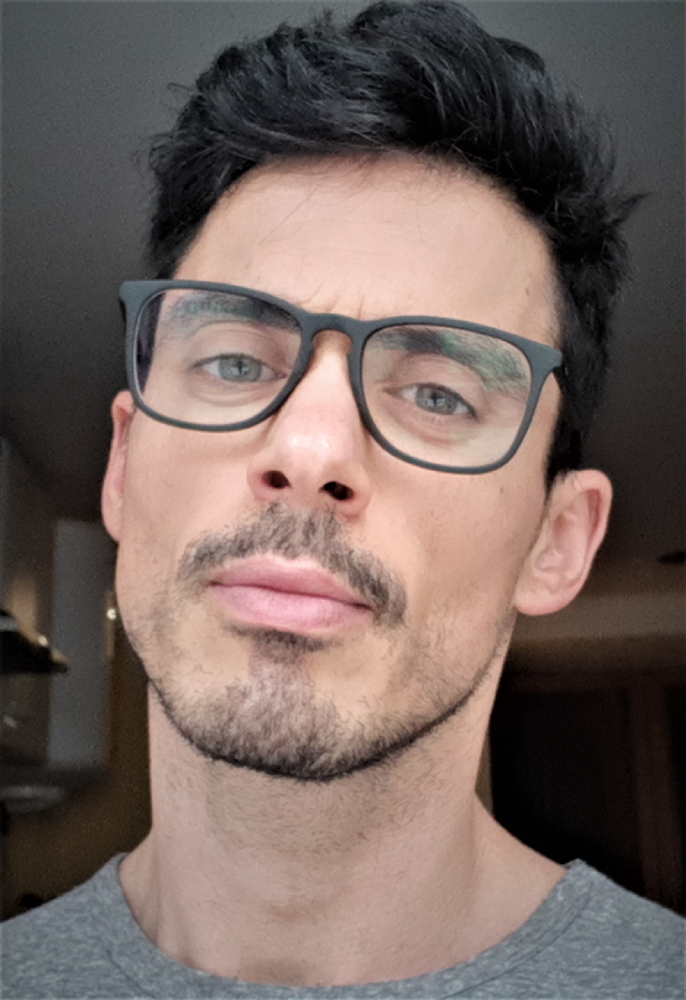

Nesta app dou-me a conhecer à distância de um "click"! ☝️
Clica em cada categoria para saberes mais.

🌲🐄🌈☀️
Chamo-me (Super) Mário. Nascido e criado na ilha de São Miguel. Este
ano completo 38 voltas em torno do sol.
🏋🎮🎨
Na última década trabalhei como instrutor de fitness e, antes disso,
jornalista de videojogos. Fui também director da
Art Attack, uma revista da Disney.
🏋🎮🌲🛋️
Gosto de desporto (sobretudo ginásio), videojogos, fazer trilhos e
de estar bem quietinho à noite.
🥦🐟🐓❄️
Fui vegetariano 18 anos. Há três anos voltei a comer peixe e frango,
mas mantenho uns 70% da dieta vegetariana. Ah! E nunca vi neve na
vida!